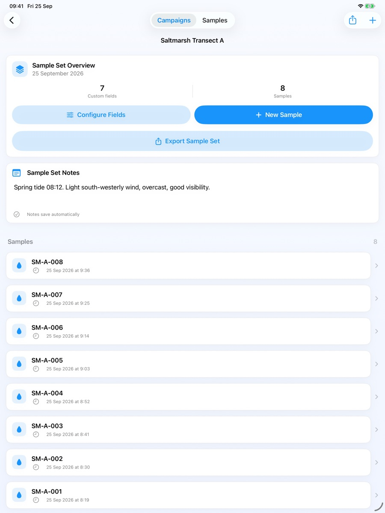
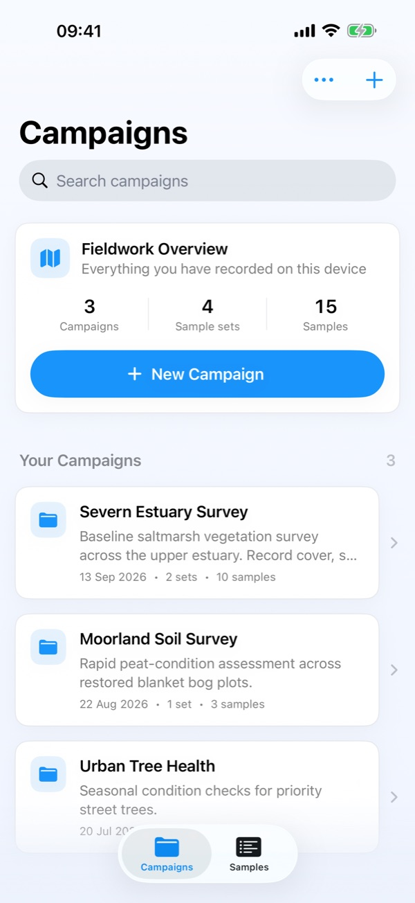
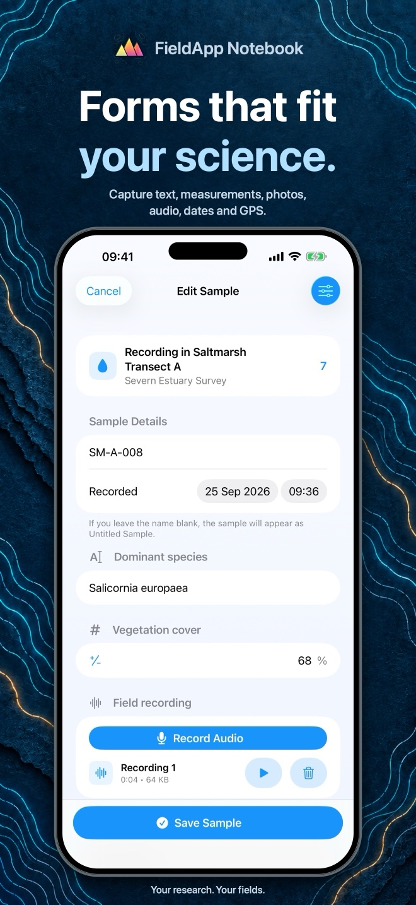
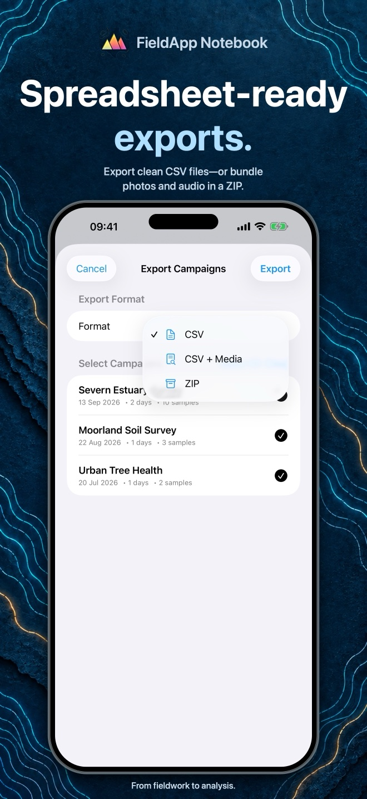
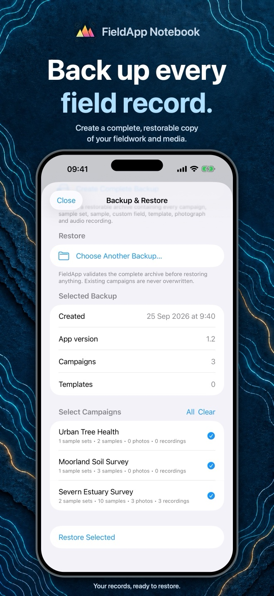

Forms that fit your work.
Choose your own fields for notes, numbers, dates, photos and GPS. Keep the structure consistent as you move from sample to sample.
Your questions. Your measurements.Your pocket-sized field notebook
Less time managing field sheets.
More time making observations.
Build forms around your work, keep photos and GPS with your samples, and take organised data straight to your spreadsheet.
For iPhone & iPad · One-time purchase · No subscription
The App Store currently offers version 1.1. Version 1.2 is not yet available.


Built for offline fieldwork
No account required
Records stored on your device
From first observation to analysis
For research, environmental surveys, teaching and the everyday work of collecting good data.
Choose your own fields for notes, numbers, dates, photos and GPS. Keep the structure consistent as you move from sample to sample.
Your questions. Your measurements.Group projects into campaigns, split them into sample sets, and keep each observation with its context. From a single site to a whole field season.
Campaign → Sample set → SampleTake your observations into Excel, Numbers, R or Python using standard CSV files. Bundle photos with the data in a ZIP when you need the full picture.
Collect in the field. Analyse anywhere.Coming in version 1.2
A brighter identity and useful improvements throughout your field notebook.
Awaiting App Store review · Not yet released
These features and the refreshed interface are shown in the previews below. Availability will be updated after the release goes live.
Record and play back audio notes within a sample, with a live recording level indicator.
Search and filter a sample library across campaigns, sample sets and recorded values.
Export directly from a sample set, with clearly named photos and recordings linked to your data.
Create a restorable copy of your fieldwork and its attachments using Backup & Restore.
A closer look at version 1.2
Actual app screens with example records.
Upcoming interface shown on iPhone.



20 seconds in the field
Take a quick look at saved observations, audio, photos, GPS and spreadsheet-ready exports in the upcoming version 1.2.
The opening reads “Your fieldwork. Organised. Even offline.” The app shows a saved sample, plays an attached audio recording and scrolls to a photograph and GPS coordinates. A highlighted tap opens export options, selects ZIP and prepares an export. The closing card shows FieldApp Notebook, for iPhone and iPad, and fieldapp.org. Original instrumental music and soft tap sounds accompany the film; there is no spoken narration.
Version 1.2 preview. Features shown are not all available in the current App Store release.
A few useful answers
Questions, feedback or a workflow you’d like to discuss?
support@fieldapp.orgNo. Create forms and record observations offline, without an account. Sending an export through email or another online service may need a connection.
Yes. FieldApp exports standard CSV files that open in Excel, Numbers and many research tools. CSV is the file format; it is not an Excel workbook. ZIP exports keep the data and its attachments together.
Yes. FieldApp Notebook is available for both. Records are stored locally on each device, not automatically synchronised between devices.
Not yet. Version 1.2 has been submitted for App Store review. The download link currently opens the existing version 1.1 listing. The screenshots and video on this page preview the upcoming update.
Your records are stored on your device. The app has no account, advertising or analytics service. You choose when and where to export or share. Read the privacy policy for details, including device backups and permissions.
FieldApp Notebook for iPhone and iPad.
{kind=link}
{kind=link}
{kind=link}